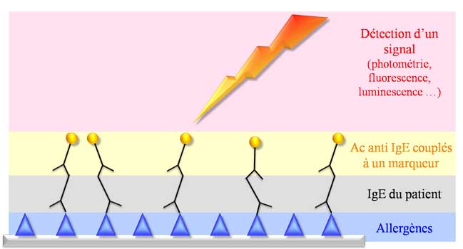

MemoBio©
Différentes étapes de la réalisation de ce test
- un seul type d’allergène ou une seule famille
d’allergènes sont fixés sur un support
- Ajout du sérum du patient et incubation : fixation
des Ig spécifiques sur leur cible antigénique
- Lavage
- Ajout d’anticorps anti-IgE couplés à un
marqueur (fluorochrome, enzyme permettant le développement
d’une réaction colorimétrique, fluorimétrique, chimiluminescente ….) et
incubation
- Lavage
- Ajout du substrat nécessaire pour produire le signal
(facultatif)
- Détection du signal (proportionnalité entre
l’intensité du signal et la quantité d’IgE)
Ce test permet de préciser la spécificité des IgE.